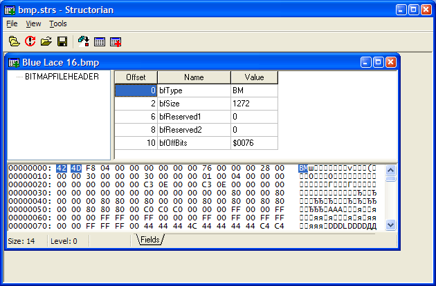
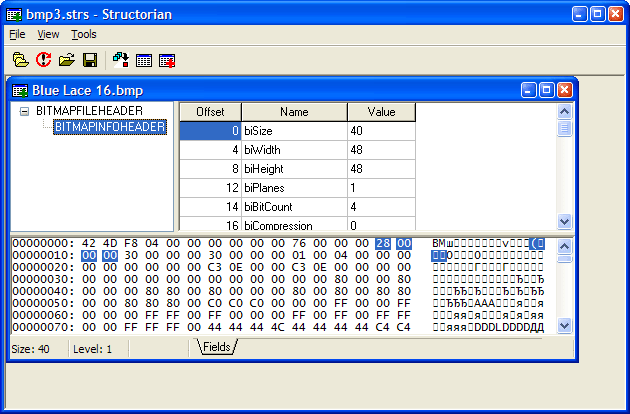
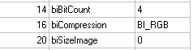

Structorian is essentially a universal viewer and editor for structured binary data. This means that Structorian is able to load a binary data file and present its contents according to the format defined in a structure definition file. Structure definition files are simple text scripts that define the layout of binary data structures in data files. The format of structure definitions supported by Structorian is very powerful and allows to represent even the most complex data formats with dynamic layout.
Structorian has the following main uses:
Essentially, Structorian represents a data file as a tree of structures consisting of fields. There are two main types of fields: visible and hidden. Visible fields are basic units of data shown to the user: integers, strings, dates and so on. On the other hand, hidden fields contain instructions describing how other fields are processed: conditions, loops, references to other structures and so on. A structure is just a sequence of fields grouped under a common name.
Let's start with a simple example: the BMP file format. The format is well described in the Microsoft documentation, and you certainly have some .BMP files lying in your Windows directory, so you can easily follow the tutorial.
Open Notepad and type (or paste) the following text. (You can find all of the examples given below in the Manual directory, if you do not want to type them yourself.)
struct BITMAPFILEHEADER
{
str [len=2] bfType;
u32 bfSize;
u16 bfReserved1;
u16 bfReserved2;
x32 bfOffBits;
}
Save it as bmp1.strs.
Congratulations! You have just created your first structure definition file, complete and readable by Structorian. If you are eager to try it out, just follow these simple steps:
Now you should see the BMP file displayed in Structorian:

Now let's look more closely at the structure definition file that you have
just entered. As you can probably see, we have defined one structure, called
BITMAPFILEHEADER, consisting of five fields. For each field, we
have specified a type and a name. The type and the name are separated with a
space, and fields are separated from each other by semicolons.
The field type determines how many bytes the
field occupies and how its content is presented to the user. The fields of types
u32 and x32 occupy 4 bytes (32 bits) each, and the fields
of type u16 occupy 2 bytes (16 bits). You can easily see that by
clicking any of the fields: when you do that, the bytes corresponding to the
field are highlighted in the hex dump. The fields of types u32 and
u16 are shown as decimal numbers (unsigned), and the field of
type x32 is shown as hexadecimal.
The field name is just a string describing the field. If the field name contains spaces or other characters that are not letters or numbers, it should be enclosed in quotation marks, like this:
u16 "Bytes on the last page";
For some fields, the field type alone is not sufficient to display the data,
and additional information is needed. That information is specified in field
attributes. An example of the attribute usage is the first field in the
structure. It has the type str and the name bfType,
and the attribute len with the value of 2. This means that the
field denotes a string with the length of 2 bytes, and the name of that string
is bfType. And as we can see in the example above, the string consists of the
characters BM, just like the Microsoft documentation says.
The syntax of the .strs files is completely described in the reference section, but for now let's mention that a field can have many attributes separated with commas, and attribute blocks can be located anywhere in the field declarations. So the following lines are equivalent:
[readonly=1, len=2] str bfType; [readonly=1] str [len=2] bfType; str bfType [len=2,readonly=1];
Structures can also have attributes. The complete list of attributes for structures and all field types can be found in the reference section.
Of course, very few files can be described with a single structure. The .BMP file format is no exception: the BITMAPFILEHEADER structure is followed with a BITMAPINFOHEADER structure. So how do we describe this layout in Structorian?
First, let's describe the BITMAPINFOHEADER structure itself. Add the following text to the structure definition file:
struct BITMAPINFOHEADER
{
u32 biSize;
i32 biWidth;
i32 biHeight;
u16 biPlanes;
u16 biBitCount;
u32 biCompression;
u32 biSizeImage;
i32 biXPelsPerMeter;
i32 biYPelsPerMeter;
u32 biClrUsed;
u32 biClrImportant;
}
Note that this structure uses a third type of integer fields - signed integer
fields, i32. Unlike u32 fields, these fields can have
negative values.
Save the file as bmp2.strs. Load it in Structorian. (You don't need to close the data file when you load a different structure definitions file. However, the current structure will be closed, and you will need to select it again.)
Try selecting the structure manually. Double-click the byte in the hex dump at the offset 14 (second byte from the right in the first row). You can see that now two structures are shown in the "Select a structure" dialog, and the Offset edit box shows the offset that you clicked. Select the structure BITMAPINFOHEADER and click OK. Now you should see the BITMAPINFOHEADER data.
Since real-life files often contain hundreds or even thousands of structures, selecting each of them manually would be incredibly tedious. The good thing is, you don't have to. If you describe the file layout in the Structorian script, Structorian will show all the structures in the file automatically.
Structorian represents the data file as a hierarchy of structures. A single top-level structure typically describes the file header and starts at the beginning of the file (at offset 0). That structure can specify the offsets and types of other structures in the file (called child structures). These other structures can point to even deeper structures, and so on. There is no limit on the number of levels in the hierarchy or on the number of structures at each level. However, the top level can have only one structure.
To point from a structure to another structure, the child field is used.
This is a hidden field; you don't see it in the grid of fields. Usually, a child
field specifies the name of the child structure, the starting offset and the
number of times the child structure is repeated. However, in our case, the child
structure immediately follows the parent and is repeated only once, so we can
specify only the child structure name.
Add the following line to the description of the BITMAPFILEHEADER structure, just before the closing curly brace:
child BITMAPINFOHEADER;
Save the result as bmp3.strs. Load it in Structorian. Select the structure BITMAPFILEHEADER at offset 0.
You can see that Structorian shows two structures in the file now. If you click the second structure in the pane, you will see its contents:

More complex examples of child field usage can be found in the sample files provided with Structorian.
Consider the biCompression field in the BITMAPINFOHEADER structure. Currently, Structorian shows it as just a number. However, the Microsoft documentation states that it can have one of a certain set of values. Let's see how we can represent this in Structorian.
First, we need to describe the set of values for this field. The list of
constants and corresponding values can be found in the Microsoft documentation and in the file WinGDI.h. In
Structorian, this set will be represented by an enum block. Enum blocks
are not included in structures, but are top-level blocks, just like struct
blocks.
Add the following lines to the bottom of the file:
enum biCompression_Type
{
BI_RGB, BI_RLE8, BI_RLE4, BI_BITFIELDS, BI_JPEG, BI_PNG
}
The constants correspond to values from 0 to 5, so we don't need to specify the values explicitly. However, if the constants correspond to different values, we need to specify the values explicitly, like in the following example:
enum PEResourceType
{
RT_CURSOR=1, RT_BITMAP, RT_ICON, RT_GROUPCURSOR=12, RT_GROUPICON=14
}
Now that we have defined the enum values, we can replace the integer field with an enum field. Find the following line in the file:
u32 biCompression;
Replace it with:
enum32 biCompression [enum=biCompression_Type];
Save the file as bmp4.strs. Load it in Structorian.
Notice that the field still occupies 32 bits, or 4 bytes. The reference to
the list of values is specified in the enum attribute.
Now, instead of a number, Structorian shows the constant corresponding to that value:

As we move further in describing the BMP file format, we find out that the
BITMAPINFOHEADER structure is followed by the color palette. However, we cannot
simply use the child field to describe the color palette, because
the type and number of structures is determined by certain fields in the
BITMAPINFOHEADER structure. To describe this, we will need to use conditions
and expressions. Note that expressions are one of the most powerful
features of Structorian, and understanding expressions is essential for working
with complex file formats.
Let's start with describing a simple case: The palette consists of 16 RGBQUAD structures for files where biBitCount is equal to 4 and of 256 RGBQUAD structures for files where biBitCount is equal to 8.
First, let's describe the RGBQUAD structure.
struct RGBQUAD
{
u8 rgbBlue;
u8 rgbGreen;
u8 rgbRed;
u8 rgbReserved;
}
Everything is pretty straightforward here. The new field type u8 is a 8-bit
(1-byte) unsigned integer field. If you prefer to view color components as
hexadecimal numbers, you can use the field type x8 instead.
To describe the conditional part of the structure, we will use a switch
field. Just like the switch statement in C, this field calculates an expression
and selects one of the cases depending on the value of the expression.
Add the following text to the end of the BITMAPINFOHEADER structure definition:
switch (biBitCount)
{
case (4)
{
child RGBQUAD [count=16];
}
case (8)
{
child RGBQUAD [count=256];
}
}
As you can see, the switch and case fields contain other fields.
Such fields are called container fields. The contents of a container
field must be enclosed in curly braces, even if there is only one field in the
container.
The expression to be evaluated is specified after the switch
field.
THIS SECTION IS INCOMPLETE. IT WILL BE COMPLETED BEFORE THE RELEASE OF STRUCTORIAN VERSION 1.0.